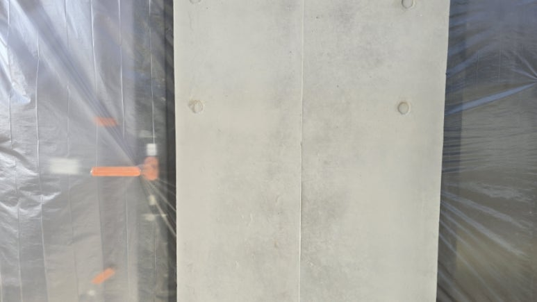
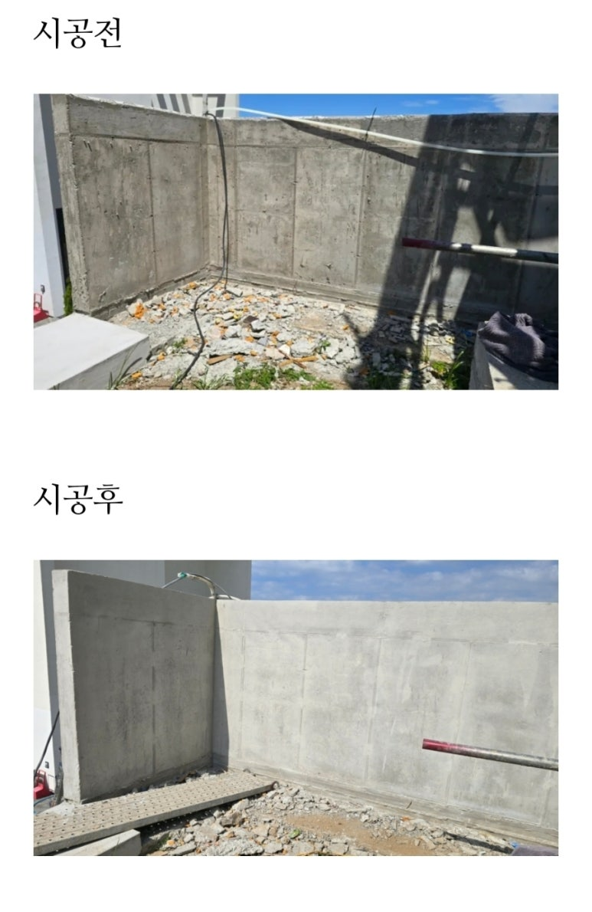
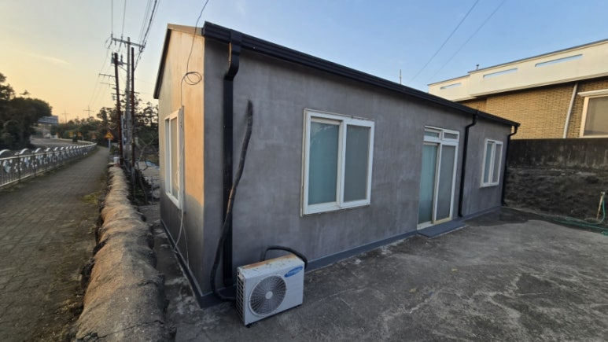
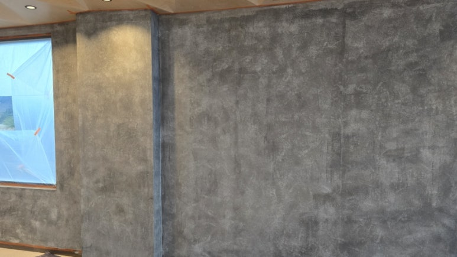

BEFORE / AFTER송파 오픈예정 식당 인더스트리얼 콘채 빈티지 벽체 시공송파 지역 식당 오픈 준비 현장에서 이질재료 벽체를 올퍼티·다단계 콘채뿜칠로 인더스트리얼 빈티지 벽체로 완성한 사례. 자재·공구 목록과 9단계 공정을 상세 기록.
BEFORE / AFTER송파 오픈예정 식당 인더스트리얼 콘채 빈티지 벽체 시공송파 지역 식당 오픈 준비 현장에서 이질재료 벽체를 올퍼티·다단계 콘채뿜칠로 인더스트리얼 빈티지 벽체로 완성한 사례. 자재·공구 목록과 9단계 공정을 상세 기록.
BEFORE & AFTER
시공사례
보정하지 않은 시공 전 · 시공 중 · 시공 후 사진과 그때 쓴 공법을 그대로 공개합니다.
보수의 완성도는 사진 한 장이 아니라 시공 전과의 차이에서 드러납니다.
아래 사례는 모두 노출콘크리트 표면 결함 복원과 특수방수 현장의 기록입니다. 각 사례에는 결함의 상태, 그때 선택한 배합과 공법, 그리고 시공 단계별 사진이 함께 들어 있습니다.
총 0건 · 최근 사례부터
BEFORE / AFTER송파 오픈예정 식당 인더스트리얼 콘채 빈티지 벽체 시공송파 지역 식당 오픈 준비 현장에서 이질재료 벽체를 올퍼티·다단계 콘채뿜칠로 인더스트리얼 빈티지 벽체로 완성한 사례. 자재·공구 목록과 9단계 공정을 상세 기록. BEFORE / AFTER제주 오염·백화 노출콘크리트 면보수 (콘채 라이트그레이2:아이보리1)제주 지역 기후로 오염과 백화가 누적된 노출콘크리트 면을 콘채(라이트그레이2:아이보리1 배합)로 복원한 면보수 사례. 시공 영상 포함.
BEFORE / AFTER제주 오염·백화 노출콘크리트 면보수 (콘채 라이트그레이2:아이보리1)제주 지역 기후로 오염과 백화가 누적된 노출콘크리트 면을 콘채(라이트그레이2:아이보리1 배합)로 복원한 면보수 사례. 시공 영상 포함. 제주 주택 웜그레이톤 콘채 노출콘크리트 마감 (아이보리·라이트그레이 1:1 배합)제주 주택 현장에서 콘채 아이보리와 라이트그레이를 1:1 비율로 배합해 부드럽고 고급스러운 웜그레이톤 노출콘크리트를 구현한 사례.
제주 주택 웜그레이톤 콘채 노출콘크리트 마감 (아이보리·라이트그레이 1:1 배합)제주 주택 현장에서 콘채 아이보리와 라이트그레이를 1:1 비율로 배합해 부드럽고 고급스러운 웜그레이톤 노출콘크리트를 구현한 사례. BEFORE / AFTER층조인트 노출콘크리트 면보수 및 컬러 조색 (시공영상 포함)층조인트를 갈아낸 면과 표면 불량부를 컬러 조색과 질감 맞춤 작업으로 자연스럽게 정리한 노출콘크리트 벽체 보수 사례. 시공 영상 링크 포함.
BEFORE / AFTER층조인트 노출콘크리트 면보수 및 컬러 조색 (시공영상 포함)층조인트를 갈아낸 면과 표면 불량부를 컬러 조색과 질감 맞춤 작업으로 자연스럽게 정리한 노출콘크리트 벽체 보수 사례. 시공 영상 링크 포함.
BEFORE / AFTER창호 주변 노출콘크리트 면보수 및 색상 매칭 (제주, 6개 구간)창호 주변 노출콘크리트의 거친 면과 단차, 타설 오차를 6개 구간에 걸쳐 기존 콘크리트 컬러·질감에 맞춰 보수한 제주 지역 사례.
BEFORE / AFTER제주 신축현장 옹벽 노출콘크리트 질감 복원 면보수신축 현장 옹벽의 색 편차, 미세 벌집, 조인트 불균형 등을 자연스러운 질감 복원 방식으로 개선한 제주 지역 면보수 사례. BEFORE / AFTER기둥 골재 노출 단면보수 및 콘채패턴 마감 (2개 기둥 사례)골재 절단면이 노출된 기둥 2곳의 단면보수와 콘채패턴 마감 과정. 단면보수 단계부터 표면 연출, 실무 판단 포인트까지 기록.
BEFORE / AFTER기둥 골재 노출 단면보수 및 콘채패턴 마감 (2개 기둥 사례)골재 절단면이 노출된 기둥 2곳의 단면보수와 콘채패턴 마감 과정. 단면보수 단계부터 표면 연출, 실무 판단 포인트까지 기록. BEFORE / AFTER노출콘크리트 옹벽 얼룩·거친면 콘채뿜칠 개선 시공얼룩과 거친 표면으로 미관이 저하된 노출콘크리트 옹벽을 콘채뿜칠 공법으로 균일한 연그레이 톤으로 개선한 사례.
BEFORE / AFTER노출콘크리트 옹벽 얼룩·거친면 콘채뿜칠 개선 시공얼룩과 거친 표면으로 미관이 저하된 노출콘크리트 옹벽을 콘채뿜칠 공법으로 균일한 연그레이 톤으로 개선한 사례.
BEFORE / AFTER판넬주택 외단열 보강 + 콘채 빈티지 노출콘크리트 마감샌드위치 판넬 주택의 외벽 단열 성능과 미관을 동시에 개선한 사례. 단열재 부착, 메쉬 미장부터 콘채 패턴·코팅까지 전 공정과 사용 자재를 기록. BEFORE / AFTER강남 의류매장 석고보드 위 콘채 그레이 패턴 노출콘크리트 시공강남 의류매장 내부 석고보드 벽체에 콘채 그레이 패턴을 적용해 빈티지한 노출콘크리트 감성을 연출한 시공 사례.
BEFORE / AFTER강남 의류매장 석고보드 위 콘채 그레이 패턴 노출콘크리트 시공강남 의류매장 내부 석고보드 벽체에 콘채 그레이 패턴을 적용해 빈티지한 노출콘크리트 감성을 연출한 시공 사례.
석고보드 바탕 그레이톤 노출콘크리트 질감 표현 (카페·갤러리형 상업공간)구조체 노출이 어려운 상업공간에서 석고보드 바탕면 위에 차갑지 않으면서 깊이감 있는 그레이 톤 콘크리트 텍스처를 구현한 사례. 올퍼티부터 무광 코팅까지 6단계 공정을 기록.TECHNICAL NOTES
공법이 궁금하시다면
사례에 쓰인 공정별 기준과 판단 근거는 기술자료에 따로 정리해 두었습니다.
CONTACT
비슷한 현장이 있으신가요?
현장사진을 보내주시면 보수 방향을 검토해 회신드립니다.